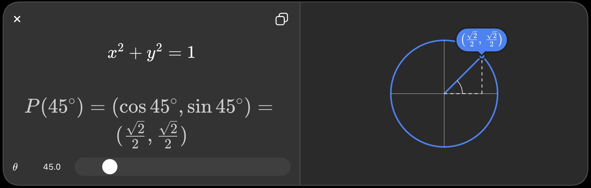

Think of opening a door:
- 🚪 Closed → 0°
- Slightly open → 30°
- Half open → 90°
- Fully around → 360°

Common angles
| Angle | Name | Simple idea |
|---|---|---|
| 0° | Zero angle | Lines point the same direction |
| 90° | Right angle | Like a corner of a square |
| 180° | Straight angle | A straight line |
| 270° | Three-quarter turn | Almost all the way around |
| 360° | Full angle | One complete turn |
Easy way to remember
Imagine a clock 🕐:
- From 12 → 3 = 90°
- From 12 → 6 = 180°
- From 12 → 9 = 270°
- From 12 → back to 12 = 360°
In mathematics, an angle measures rotation.